Projects at UPenn
- 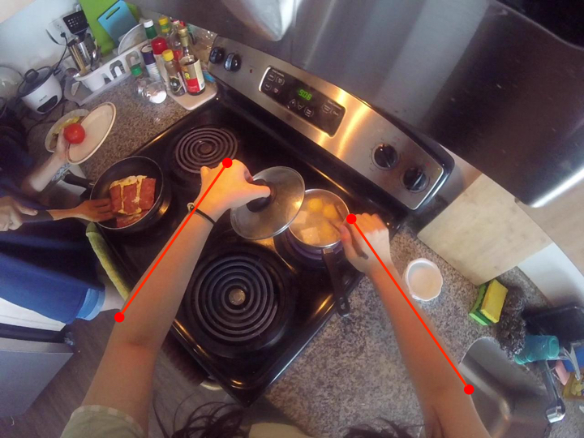
- 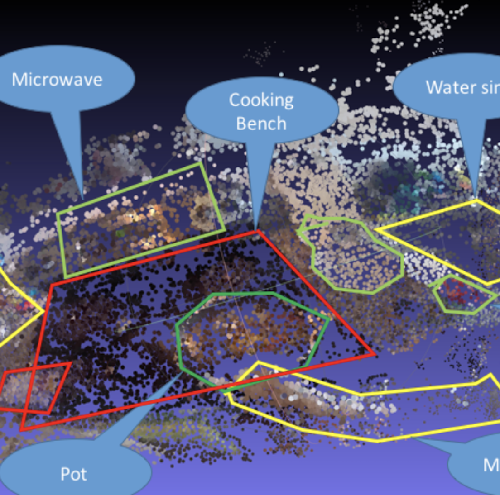
- 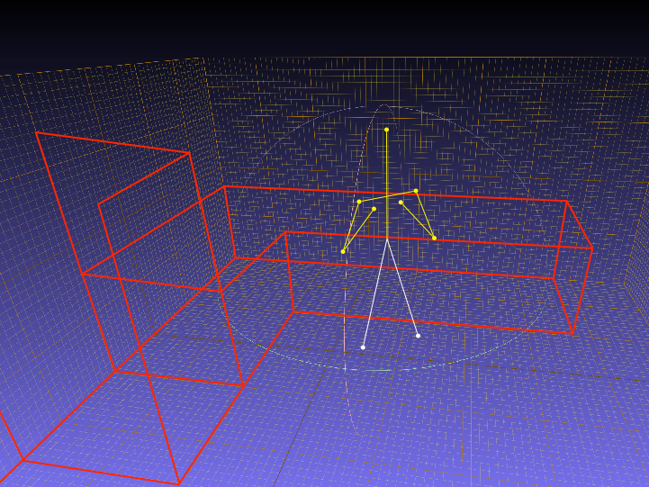
Projects at Tsinghua Univ.
-
Multilabel Image Classification
03. 2018 – 06. 2018
Computer Vision and Artificial Intelligence Laboratory, Tsinghua University
Graduation thesis, advised by Prof. Shengjin Wang
- 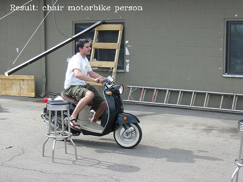
- 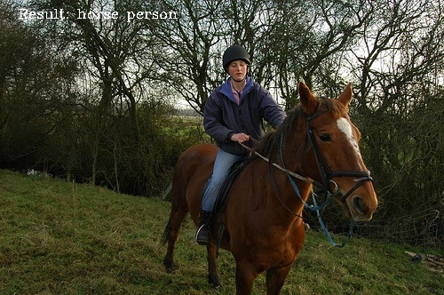
- 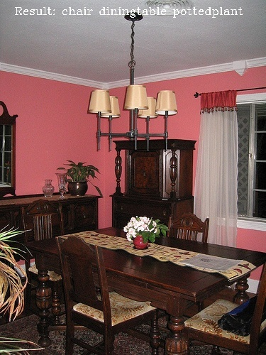
- 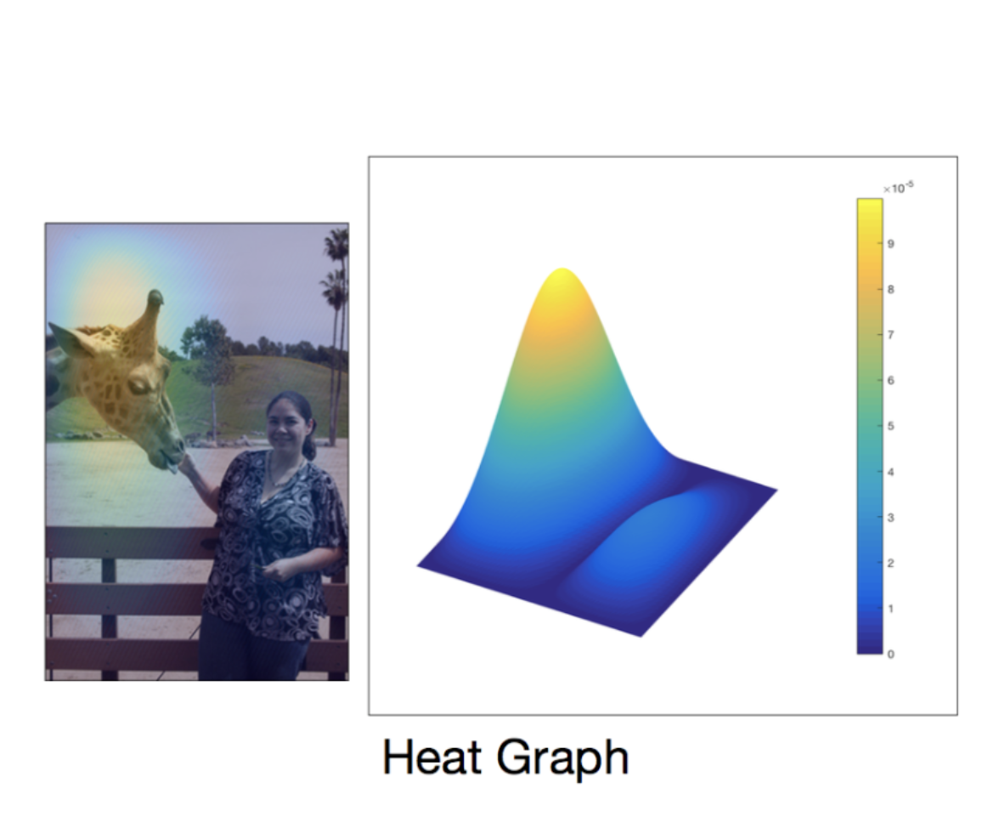
- 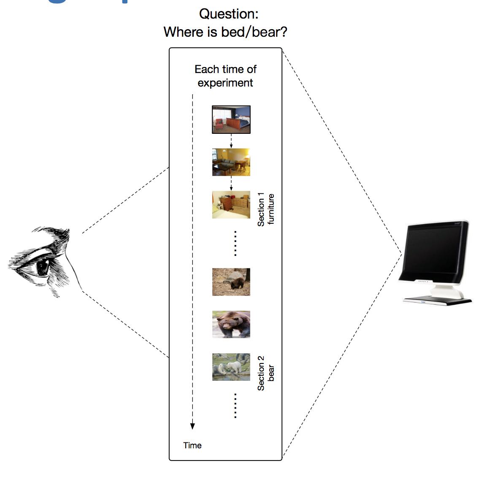
-
Characterizing Psychological Problems via Interactive Devices
09. 2017 – Present
3D Image Simulation Laboratory, Tsinghua University
Project Assistant to Prof. Huimin Ma
Prominent Internship/Course Project
-
End-to-End Printed Chinese Text Recognition
11. 2017 – 01. 2018
Vision Engineer at Huawei, Beijing
-
Magnetic Resonance Imaging (MRI) Registration
10. 2015 – 12. 2015
Electrical Engineerign, Stanford University
Participants in a remote project of Prof. Tsachy Weissman
-
3-D vector text construction and texture mapping
04. 2016 – 05. 2016
Course project in “Computer Graphics”
-
Image Searching
06. 2016 – 07. 2016
Intern project in Chinese Academic Institute
-
32-bit Centural Processing Unit(CPU) Design and Implementation
04. 2016 – 05. 2016
Course project in “Digital Logic and Processor”
- 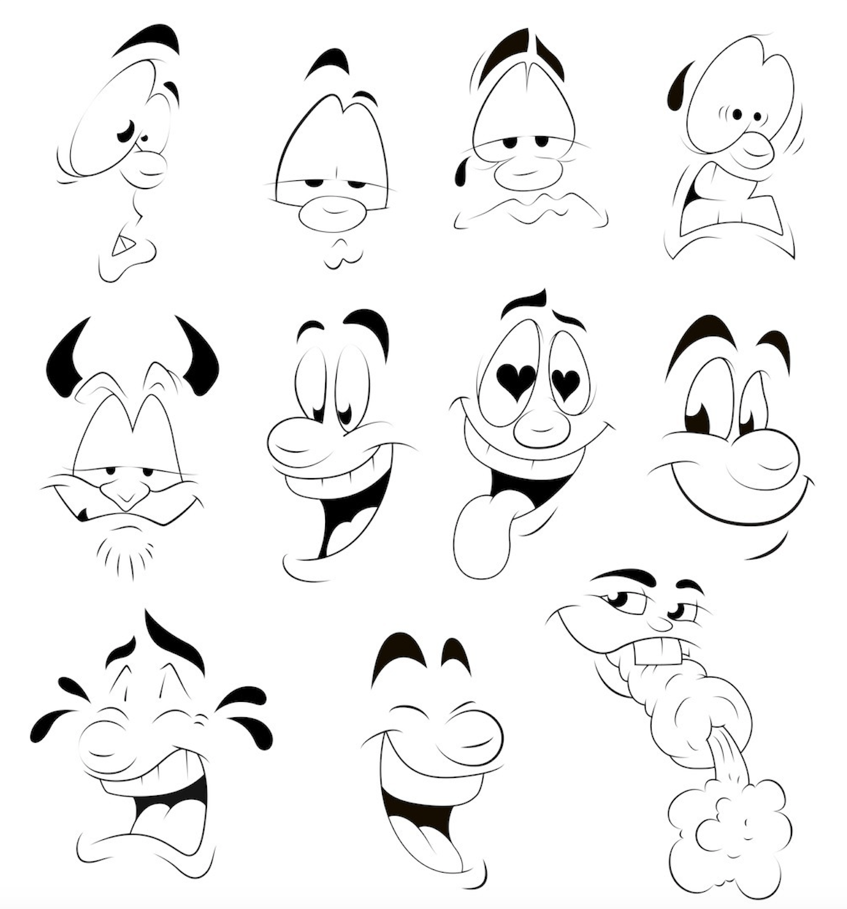
- 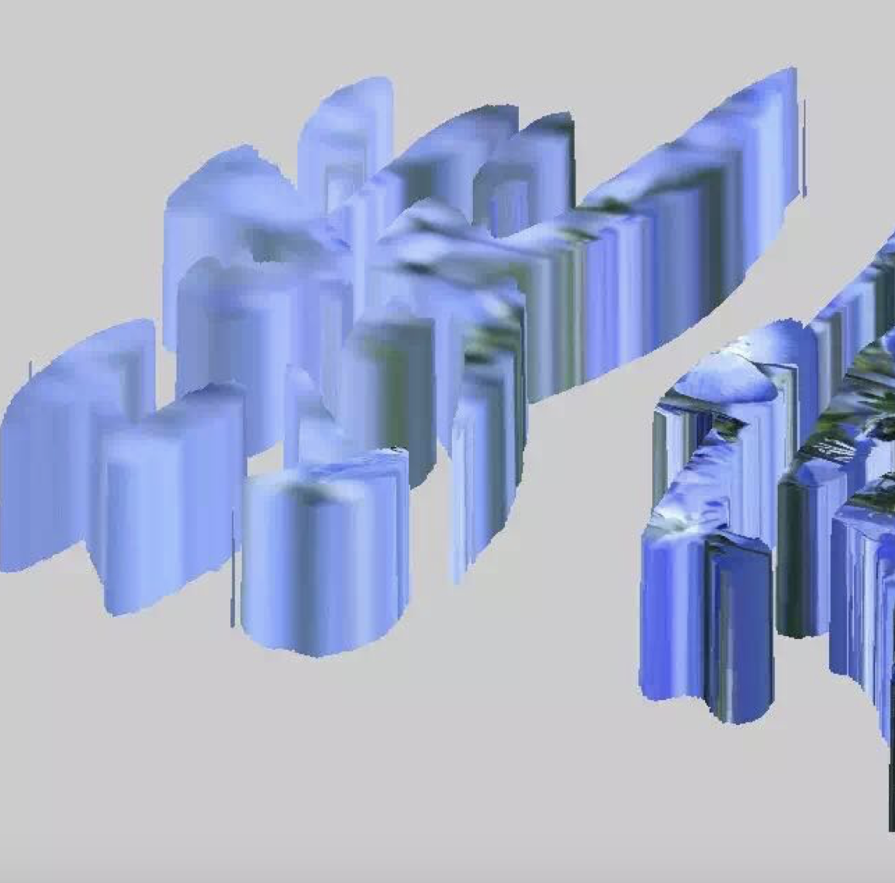
- 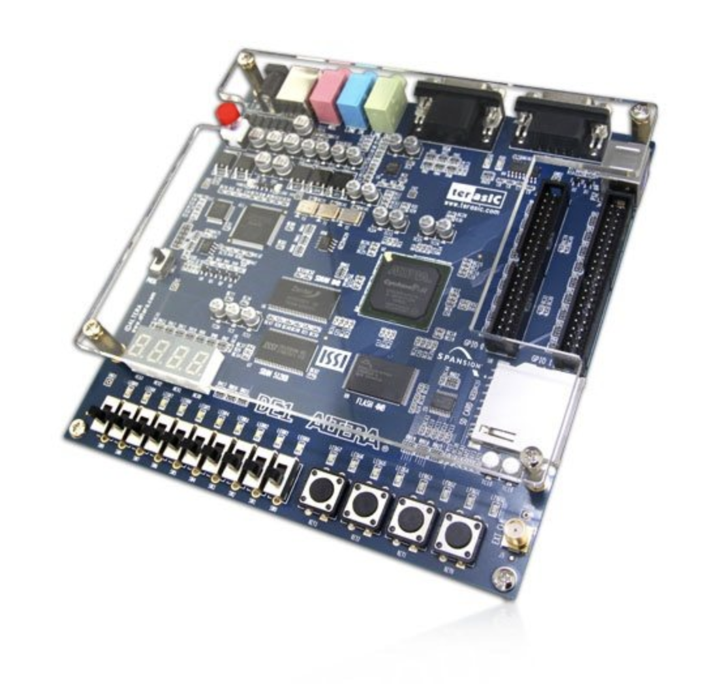